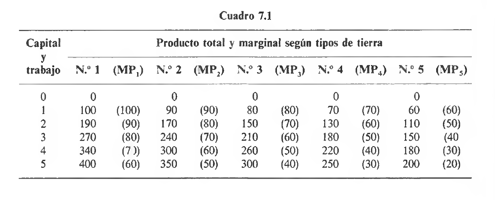
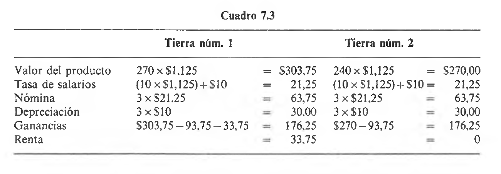

Historia del Pensamiento y del Análisis Económico
U4. La economía política. El corazón de la escuela clásica inglesa. Ricardo, Malthus, Say y Bentham.
Contexto y desarrollo de la economía clásica. Thomas Malthus, Jean Baptiste Say y Jeremy Bentham
El contexto histórico: Revolución francesa y reformismo
- Tras la Revolución francesa, el debate intelectual se polarizó
- El reformismo quedó limitado solo a aspectos económicos
- William Godwin representaba una de las pocas voces favorables a la Revolución
- El reformismo en sentido pleno solo regresaría medio siglo después
- Con el movimiento cooperativo en Inglaterra
- Con las ideas de John Stuart Mill
Malthus: vida y obra
- Thomas Robert Malthus (1766-1834)
- Estudiante en Cambridge (1784-1788)
- Ministro de la Iglesia anglicana
- Profesor en el East India College (1805)
El Ensayo sobre población
- Su obra más famosa: “Ensayo sobre el principio de población” (1798)
- Primera edición \(\longrightarrow\) constituyó un panfleto político provocador
- Ediciones posteriores \(\longrightarrow\) volumen erudito con referencias empíricas
- Respuesta conservadora a las ideas de Godwin
El principio de población (I)
Tesis central: Desequilibrio entre población y recursos por medio del cual la producción agrícola crece en proporción aritmética mientras que la poblacíon crece en proporción geométrica
El principio de población (II)
- El crecimiento poblacional está limitado por los medios de subsistencia
- El excedente de recursos acelera el crecimiento poblacional
- El desequilibrio afecta negativamente las condiciones de vida
El mecanismo económico
Proceso automático. El crecimiento poblacional presionaba los precios de los alimentos que aumentaban. En consecuencia, esto implicaba una reducción de los salarios reales lo que repercutía en una menor calidad de vida. Eventualmente esto conducía a un aumento de la mortalidad y/o reducción de la natalidad.
Las alternativas humanas
- Vías de intervención para mantener el equilibrio:
- La senda de la “virtud”: castidad y continencia
- La senda del “vicio”: anticoncepción (posición neomaltusiana)
Antecedentes históricos
- La tesis de Malthus tenía precedentes:
- Giovanni Botero (1544-1617): contraste entre capacidades generativa y nutritiva
- Gianmaria Ortes (1713-1790): crecimiento poblacional en progresión geométrica
- Debate previo entre Turgot y Necker en Francia
- Malthus citó a algunos autores pero no a todos sus predecesores
- Posible influencia no reconocida de Robert Wallace (1761)
El impacto político (I)
- Mayor repercusión por su enfoque específico:
- Centrado en las implicaciones políticas de la relación población-subsistencia
- Cuestionamiento de cambios institucionales radicales
- Economistas como Ricardo utilizaron el principio para apoyar:
- La “ley de bronce de los salarios” \(\longrightarrow\) tendencia al nivel de subsistencia
- Nivel interpretado en términos sociales, no meramente biológicos
La dinámica de los salarios (I)
- Salario por encima del nivel de subsistencia:
- Crecimiento poblacional
- Insuficiente producción agrícola
- Aumento de precios alimentarios
- Descenso del salario real
La dinámica de los salarios (II)
- Salario por debajo del nivel de subsistencia:
- Reducción poblacional
- Menor demanda de bienes básicos
- Descenso de precios alimentarios
- Aumento del salario real
Críticas fundamentales (I)
- Problemas de la teoría maltusiana:
- Desfase temporal: efectos laborales solo visibles 14-16 años después
- Presupone ausencia de progreso tecnológico agrícola
Críticas fundamentales (II)
- La experiencia histórica contradice la teoría:
- Menor proporción de población produce más alimentos
- La explicación de Smith sobre el poder de negociación parece más sólida
El propósito del Ensayo (I)
- Malthus buscaba demostrar la inutilidad de reformas sociales:
- Mejoras temporales generarían mayor crecimiento poblacional
- Los salarios volverían al nivel de subsistencia
El propósito del Ensayo (II)
- Las mejoras solo vendrían de “frenos preventivos” poblacionales
- Activados únicamente bajo amenaza de pobreza
- Las políticas contra la pobreza serían contraproducentes
- El temor fomenta la laboriosidad
El debate sobre incentivos (I)
- Malthus se oponía frontalmente a Smith, Condorcet y Godwin:
- Reformistas: la esperanza de mejora impulsa la industria
- Smith: “el temor es un despreciable instrumento de gobierno”
El debate sobre incentivos (II)
- Godwin y Thompson argumentaban:
- Los “frenos preventivos” surgen de mejores niveles de vida
- La organización social puede modificar la ley de población
- La independencia económica femenina altera la dinámica
La “ciencia lúgubre” (I)
- Las ideas maltusianas dominaron la economía política clásica
- Su pesimismo sobre el progreso marcó la disciplina
- Thomas Carlyle (1849) la llamó “ciencia lúgubre”
- Consecuencias para la economía:
- Creciente desconfianza pública
- Separación entre teoría económica y cuestiones sociales
- Preparación para la revolución marginalista
La “ley de Say” (I)
- Formulada por Jean-Baptiste Say (1767-1832) en 1803
- Idea básica: “la oferta crea su propia demanda”
- Múltiples interpretaciones de esta “ley”
- Crítica a aspectos de la doctrina fisiocrática
- Reafirmaba tesis de Smith:
- Posibilidad de desarrollo a largo plazo
- Importancia del ahorro e inversión sobre el consumo
- Reafirmaba tesis de Smith:
Versiones de la ley (I)
- Distinciones conceptuales:
- “Identidad de Say”: oferta agregada igual a demanda agregada (versión fuerte)
- “Igualdad de Say”: desequilibrios temporales con fuerzas correctoras (versión débil)
Versiones de la ley (II)
- Característica distintiva de la “escuela ricardiana”
- Adoptada por Mill, Torrens, McCulloch y Ricardo
- Criticada por Sismondi, Malthus y Lauerdale que defendían la posibilidad de crisis de sobreproducción
El corazón de la escuela clásica: David Ricado
El corazón de la economía clásica
- Adam Smith no sólo estableció los fundamentos de la teoría clásica del valor y la primera teoría sobre crecimiento económico, sino que generó una curiosidad e interés inusitado por las cuestiones económicas
- David Ricardo, Thomas Malthus, James y John Stuart Mill, Jeremy Bentham y Nassau Senior fueron otras figuras realmente importantes de la escuela clásica inglesa que ciertamente vieron en la obra de Smith un oasis de curiosidad intelectual
- de todos ellos, David Ricardo por estatura intelectual, rigor analítico y contribuciones a la teoría y análisis económico fue el punto más alto
Vida temprana
- Nació en Londres en 1772, hijo de un agente de bolsa judío sefardí
- Estudió en Ámsterdam entre los 11 y 13 años, educación comercial básica
- A los 21 años se casó contra la voluntad familiar, siendo repudiado
- Se vio obligado a abrirse camino por sí mismo
- Alcanzó rápidamente una posición importante en los negocios dado que era astuto para los negocios y las inversiones
Carrera y retiro
- Su trabajo en la bolsa lo impulsó a considerar las vicisitudes económicas
- En 1799 leyó “La riqueza de las naciones” de Adam Smith
- Se retiró de la bolsa en 1815, a los 43 años, ya como persona adinerada
- Se trasladó al campo, a Gatcomb
- Desde 1819 fue miembro del Parlamento
Primeras obras
- Sus primeros escritos (1809-1810) abordaron controversias monetarias
- “El precio del oro” (1809), artículos en Morning Chronicle
- “El alto precio de los metales” (1810)
Obras principales
“Ensayo sobre la influencia de un bajo precio del grano sobre los beneficios del capital” (1815)
“Principios de economía política y tributación” (1817)
- Nuevas ediciones en 1819 y 1821
- Consolidó su posición como figura importante de la élite política-cultural
Falleció en 1823
La visión económica ricardiana
- Ricardo tomó de Smith su “visión” del sistema económico
- Sociedad basada en la división del trabajo
- Dos sectores: agricultura y manufacturas
- Tres clases sociales con sus respectivas rentas:
- Trabajadores: salarios
- Capitalistas: beneficios
- Terratenientes: rentas
Enfoque metodológico
- Su enfoque era más analítico y riguroso que el de Smith
- Smith intentó abarcar diversos aspectos de la realidad económica
- Ricardo construyó un edificio analítico meticuloso
- Concentró su atención en problemas específicos
- Excluyó lo que consideraba no directamente relevante
- Priorizó el rigor lógico y la precisión
El sistema de David Ricado
- El sistema de David Ricardo era un monumento al proceso de razonamiento deductivo. Giraba fundamentalmente alrededor 3 (tres) principios básicos
- la teoría clásica de la renta
- el principio de la población de Malthus
- la doctrina del fondo de salarios
Distribución del excedente
- Ricardo se enfocó en la distribución del excedente entre rentas y beneficios
- Los salarios corresponden al consumo de subsistencia de los trabajadores
- Las rentas y beneficios forman el excedente
Clases sociales y uso del excedente
- Diferente uso del excedente según la clase social:
- Terratenientes: asignan sus rentas a consumos de lujo
- Capitalistas: invierten la totalidad de sus beneficios
- El desarrollo económico procede de la acumulación realizada por los capitalistas
- La parte de renta que va a beneficios determina el ritmo de acumulación
Teoría de la renta diferencial I
- La renta de tierras fértiles corresponde a la reducción en costes unitarios
- Es igual a la diferencia entre costes en tierras menos fértiles y la tierra considerada
- Multiplicada por la cantidad de producto obtenida
Teoría de la renta diferencial II
- La renta de las tierras cultivadas menos fértiles es nula
- No entra en el coste de producción
- Los beneficios resultan ser una magnitud residual
- Propuesta durante el debate sobre derechos arancelarios al grano (1815)
- Aunque se atribuye a Ricardo, fue propuesta antes por Malthus y West
Crecimiento económico
- El crecimiento económico procede de la acumulación y los beneficios
- Lo que reduce los beneficios obstaculiza la acumulación
- El desarrollo económico reduce automáticamente los beneficios:
- El crecimiento conlleva aumento poblacional
- Aumenta la demanda de productos agrícolas
Tendencia de los beneficios
- Se expanden los cultivos a tierras menos fértiles
- La tierra marginal resulta cada vez menos productiva
- Aumentan los costes unitarios del producto
- Las rentas aumentan en tierras ya cultivadas
- Los beneficios disminuyen
- Se frena la acumulación
Comercio internacional
- Las importaciones de grano son la mejor solución ante el aumento de demanda
- Evitan cultivar nuevas tierras menos fértiles
- Previenen el aumento de la renta
- Mantienen el ritmo de acumulación
Política económica
Ricardo abogaba por eliminar obstáculos al comercio internacional
- Particularmente los derechos sobre productos agrícolas
Su teoría expresaba el conflicto entre terratenientes y burguesía manufacturera
Su teoría de la ventaja comparativa reforzaba esta conclusión política
- El comercio beneficia al conjunto de países implicados
Teoría del valor
- Ricardo consideraba como dato el tamaño del excedente
- Los beneficios aparecen como magnitud residual
- El tipo de beneficio está en el centro de su análisis
- Más importante que la cantidad agregada de beneficios
Implicaciones políticas
- Su construcción teórica demostraba que:
- La abolición de derechos sobre el grano tendría efectos positivos sobre la acumulación
- Aumentaría la “riqueza de las naciones”
- Beneficiaría a la naciente burguesía manufacturera
Legado inicial
- Tras su muerte, su herencia científica se fue disipando gradualmente
- Se produjo una distorsión de su pensamiento original
- Con el enfoque marginalista (después de 1870):
- Se le consideraba un genio mal encaminado
- Se sugirió que había metido a la economía en una senda equivocada
Recuperación de su pensamiento
- La edición de Sraffa (1951-1955) de sus obras y correspondencia:
- Una obra maestra del rigor filológico
- Limpió el campo de malas interpretaciones
- Renovó las discusiones sobre la teoría del valor y distribución
- Conexión con debates teóricos contemporáneos
La doctrina clásica de la renta
- La primera vez que se sugiere la existencia de rendimientos decrecientes es en un tratado de James Anderson, padre e inventor del arado escocés
- Uno de los elementos centrales que permitió aflorar esta discusión fue el papel preponderante de las denominadas Leyes de Granos durante las guerras napoleónicas
- Napoleón trazó un embargo sobre puertos británicos –escasez de grano extranjero requirió de aumento de producción de grano en UK
- El costo de producción era más alto lo que siguió fue un fuerte aumento del principal alimento \(\longrightarrow\) un 18% anual en promedio entre 1790 y 1810!
La doctrina clásica de la renta (cont.)
- Al mismo tiempo las rentas de la tierra aumentaron –esto generó intereses para seguir promoviendo (lobby) la protección
- Aquí es donde entran las Leyes de Granos de 1815 \(\longrightarrow\) proteccionismo agrícola y los efectos sobre la distribución de la renta y el crecimiento dieron paso al análisis económico sobre estas cuestiones
La doctrina clásica de la renta (cont.)
- Ya Malthus se había anticipado a Ricardo en una intuición poderosa
La causa del precio monetario comparativamente alto del grano es su precio real comparativamente costoso…y la razón por la que el precio real del grano es más alto…en la necesidad de recurrir a tierras cada vez más pobres…que exigen un gasto mayor para trabajarlas…Se sigue el precio del producto en todo país progresivo debe ser exactamente igual al coste de producción de la tierra de peor calidad… [Thomas Malthus, An Inquiry into the Nature and Progess of Rent (1815)]
La doctrina clásica de la renta (cont.)
- Ricardo definía la renta como “lo que se paga…por el uso de las energías originarias e indestructibles del suelo”
- la renta no existía en el margen y sólo aparece en las mejores tierras cuando se activan las peores tierras
- Identifica correctamente el margen extensivo (ampliación de frontera agrícola a tierras nuevas)y margen intensivo (caída de rendimientos de tierra de misma calidad)
- Efecto de las Leyes de Granos forzar una agricultura más intensiva y extensiva \(\longrightarrow\) Ricardo demuestra que existían rendimientos decrecientes tanto en el margen intensivo –mayor cantidad de factores aplicada a la misma tierra- como en el margen extensivo –misma cantidad de factores aplicada a diferentes clases de tierra
La doctrina clásica de la renta (cont.)
Figure 1: Rendimientos de las tierras
La doctrina clásica de la renta (cont.)
\(K\) y \(L\) se combinan en proporciones fijas. Cada columna denota calidad de tierras (fertilidad) en orden descendente. \(PM\) es la variación del producto total (primera columna) que resulta de la adición de 1 (una)> unidad de \(K\)-\(L\). Siendo la renta “la diferencia entre entre el producto obtenido por el empleo de dos cantidades iguales de capital y trabajo”, entonces vemos como aparece en el margen intensivo –10 al agregar la 2da unidad, 30 al agregar la 3ra unidad y así. También aparece en el margen extensivo –si se usan tierras 1, 2 y 3 con sólo 1 (una) unidad e \(K\)-\(L\), la renta sería de 60 para tierra 1 y de 30 para tierra 2. La tierra 3 no tiene renta
La doctrina clásica de la renta (cont.)
- Esta teoría permite encontrar la asignación óptima de recursos entre diferentes tierras si contamos con información de \(P\) de bienes y factores
- Si precio por bushel de grano es \(1\) y precio de cada dosis de \(K\)-\(L\) es igual a 100, sólo habría producción en la tierra 1
- Si precio de cada dosis de \(K\)-\(L\) es igual a 60, se pondrían en producción todas las tierras, incluso la 5 – note que se emplearían 5 (cinco) unidades de \(K\)-\(L\) en la tierra 1, 4 (cuatro) unidades de \(K\)-\(L\) en la tierra 2 y así.
La doctrina clásica de la renta (cont.)
- Un comentario importantes es que Ricardo suponía que la tierra no tiene usos alternativos –grano o “barbecho” que no tiene valor (i.e. la manufactura no tiene uso valioso para la tierra)
- Esto es entendible por cuanto la principal preocupación de Ricardo, Malthus et al era el de determinar la distribución del producto total entre renta, salario y beneficios.
La teoría del valor trabajo
- Ricardo y Malthus fueron dos de los grandes titanes de la escuela clásica inglesa pero frecuentemente tuvieron opiniones contrarias – Tenían visiones opuestas sobre las Leyes de Granos –Malthus a favor, Ricardo en contra
- Malthus \(\longrightarrow\) la libre importación de granos, reduciría precios de cereales (y de salarios) y causaría depresión
- Ricardo \(\longrightarrow\) las Leyes de Grano implicaban aumento de salarios y disminución de beneficios, menos acumulación de \(K\) y menos crecimiento
La teoría del valor trabajo (cont.)
- Ricardo elabora una teoría del valor trabajo como una teoría del coste real
- Ricardo quería entender cómo los cambios en las proporciones relativas en la renta correspondientes a \(K\), \(L\) y \(T\) afectaban la acumulación de capital y el crecimiento
- Criticó algunos aspectos de la teoría del valor trabajo de Smith –particularmente su visión de que un aumento en el precio del factor aumentaría el precio de bienes producidos por ese factor
La teoría del valor trabajo (cont.)
- La relación entre valor y tiempod e trabajo empleado en la producción era simple
cualquier aumento de la cantidad de trabajo debe elevar el valor de este bien sobre el que se ha aplicado, así como cualquier disminución debe reducir su valor [David Ricardo, Principios de Economía Política y Tributación (1817)]
- Si bien orientó su TVT a conclusiones generales hizo ciertas consideraciones
La teoría del valor trabajo (cont.)
- Bienes no reproducibles \(\longrightarrow\) “existen ciertos bienes cuyo valor está determinado tan sólo por su escasez. Ningún trabajo puede aumentar la cantidad de dichos bienes y, por tanto, su valor no puede ser reducido por una mayor oferta de los mismos”
- Capital como trabajo incorporado \(\longrightarrow\) Ricardo distinguió famosamente entre capital fijo y capital circulante
- Capital circulante \(\longrightarrow\) “perece rápidamente y tiene que ser reproducido con frecuencia”
- Capital fijo \(\longrightarrow\) “se consume lentamente” –i.e. depreciación
La teoría del valor trabajo (cont.)
- Reconoció las dos maneras en que el capital afecta al valor de los bienes
- el capital utilizado en la producción constituye una adición al valor del producto
- el capital utilizado por unidad de tiempo tiene que ser compensado
- Uno de los primeros y lúcidos reconocimientos del valor del tiempo como un factor importante del valor
- Queda claro que Ricardo basó el valor en los costes reales de \(L\) y \(K\)
- Diferencia con TVT de Smith \(\longrightarrow\) excluía la renta de los costes
La teoría del valor trabajo (cont.)
- Pero esencialmente sostenía que las cantidades relativas de trabajo usadas en la producción son los principales determinantes de los valores relativos
- no omitió considerar otros factores que influían per ose encargó establecer los supuestos sobre los que derivaba sus conclusiones
- ¿Era una TVT sin deficiencias? La respuesta es no. No trataba adecuadamente las diferencias cualitativas en el trabajo.
- Además, excluir la renta de los costes sólo puede justificarse si la \(T\) no tiene usos alternativos
- Limitaba el rol de la demanda a una clase especial de bienes (no reproducibles) –¿qué pasa con costos de producción no constantes?
El progreso económico y el estado estacionario
- En Ricardo, la teoría del valor junto con la teoría de la renta proporcionaba la clave para el problema de la distribución de la renta
- Relacionó el precio de mercado con los costes de producción de la empresa marginal (aquella que no produce renta)
- Ideó el concepto de la empresa media –la proporción de \(K\) y \(L\) son iguales a las de la media de la economía
- de este modo pudo a su manera resolver el problema de la distribución de la renta y sus variaciones
El progreso económico y el estado estacionario (cont.)
El valor de cambio de todos los bienes, ya sean manufacturados, extraídos de las minas u obtenidos de la tierra, está siempre reguladono por la menor cantidad de mano de obra que bastaría para producirlos, en circunstancias ampliamente favorables y de las cuales disfrutan exclusivamente quienes poseen facilidades peculiares de producción, sino por la mayor cantidad de trabajo necesariamente gastada en su producción, por quienes no disponen de dichas facilidades, por aquellos que siguen produciendo esos bienes en las circunstancias más desfavorables [David Ricardo, Principios de Economía Política y Tributación (1817)]
El progreso económico y el estado estacionario (cont.)

Figure 2: Distribución de la renta
El progreso económico y el estado estacionario (cont.)
- Suponga que 3 (tres) dosis de \(L\) y \(K\) producen 270 bushels de cereal por año. Cada unidad de \(L\) es un gasto de capital circulante (i.e. fondo de salarios)y cada unidad de \(K\) es un gasto de capital fijo (i.e. depreciación)
- El beneficio total es el ingreso total menos la suma de capital fijo y circulante. Suponga \(\longrightarrow\) precio de cereal (\(1),\)w$ de $10 bushels de cereal, $10 por otras necesidades, y depreciación de $10
- la nómina es $60, la depreciación es $30 y la ganancia total es de $180, la renta es $0 (tierra 1)
El progreso económico y el estado estacionario (cont.)
- Ahora el cultivo se extiende a la tierra 2 \(\longrightarrow\) ahora 3 (tres) dosis de \(K\) y \(L\) producen sólo 240, el precio del grano debe aumentar a 1.125 (para obtener el mismo valor de producto)
- este aumento del precio eleva salarios monetarios y rentas agregadas y disminuye beneficios
- La renta sólo aparece en la tierra 1 cuando se pone en producción la tierra 2
- el crecimiento económico perjudica a los capitalistas/empresarios a costa del terrateniente –¿y los trabajadores/agricultores? Salario real no cambia
El progreso económico y el estado estacionario (cont.)
Figure 3: Disminución de los beneficios
El progreso económico y el estado estacionario (cont.)
Nota. Recuerde que para David Ricardo la renta se calcula como el valor del producto inicial de la empresa menos el valor del producto de la empresa marginal
El progreso económico y el estado estacionario (cont.)
- Ricardo estimaba que las tasas salariales se mantendrían al nivel de subsistencia a largo plazo (por teoría poblacional)
- pero salarios más altos temporales presionan sobre beneficios a medida que aumenta producto y eventualmente se llega a un estado estacionario
- ¡El resultado lógico del crecimiento es el estancamiento!
- Claramente no hay lugar para el progreso técnico aquí y también acepta como válido el principio de la población
- Lo que importa, no obstante, es que es un sistema lógicamente consistente que deriva esas conclusiones a partir de supuestos dados y de lógica deductiva
El progreso económico y el estado estacionario (cont.)
El mecanismo. La tasa media de salarios determinada por proporción entre capital fijo y circulante (fondo de salarios) y la población Mientras los beneficios son positivos, el stock de \(K\) aumenta y el aumento en la demanda de trabajo aumenta temporalmente la tasa media de salarios. Pero cuando la tasa media de salarios sube por encima de la subsistencia, entonces aumenta la procreación y la población. Población mayor exige más alimentos (y en condiciones de restricciones a la \(M\)) deben ponerse en uso tierras menos fértiles. Empiezan a aumentar las rentas agregadas, disminuyen los beneficios, y los salarios vuelven a subsitencia –estado estacionario